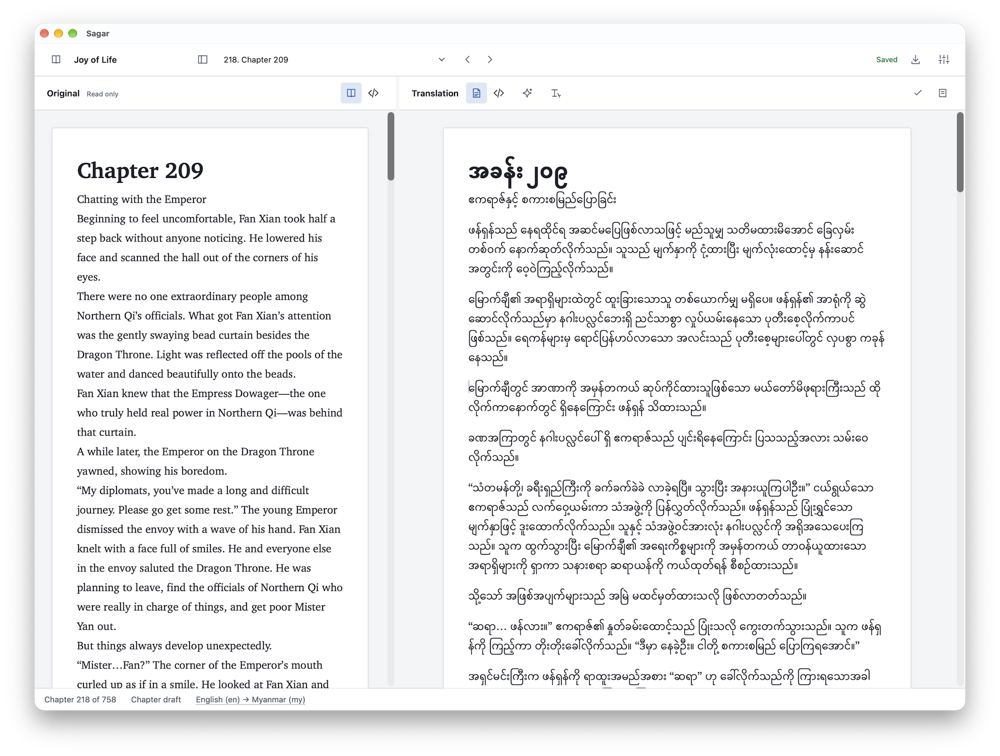
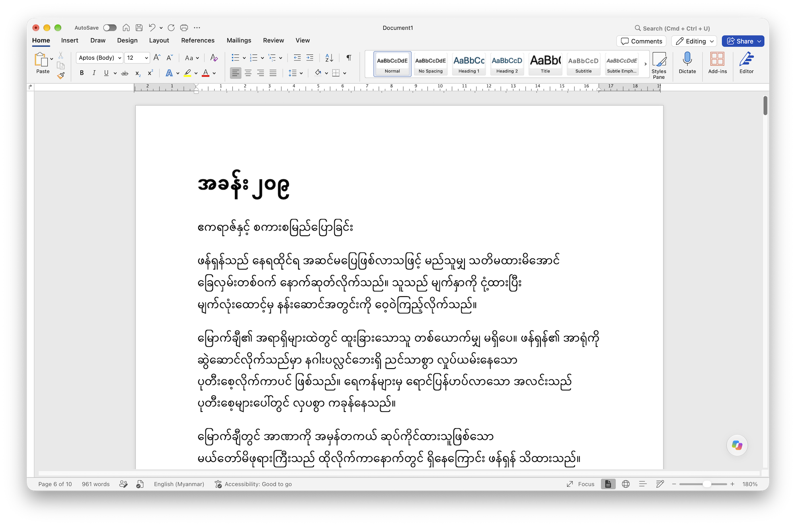
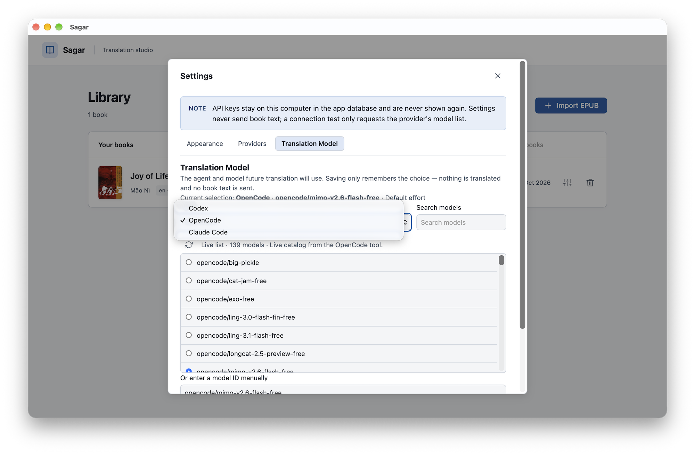
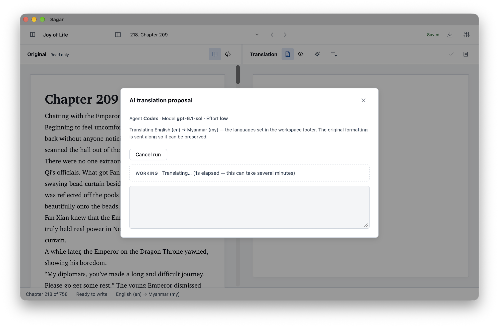

Start with your EPUB.
Open a DRM-free, reflowable EPUB 3. Sagar creates a private source snapshot and organizes chapters in the book’s reading order.
EPUB Translation Studio
Read the original. Write your translation. Bring it all together in a new EPUB. A focused desktop workspace for the stories you want to share.
Built for desktop · macOS, Windows & Linux
Check releases for available installers.

From first page to finished book
Keep your reading, writing, and progress together, chapter by chapter.
Open a DRM-free, reflowable EPUB 3. Sagar creates a private source snapshot and organizes chapters in the book’s reading order.
Read beside your translation, write in the rich text editor, and return to locally saved drafts. Review each chapter or choose to keep its original text.
Review unfinished chapters, set your book’s title and language, and export a separate EPUB. Draft exports make remaining original-language chapters explicit.
Space for your own words
A dedicated chapter workspace keeps the source in view while you shape the translation.

Optional assistance
Prefer a starting draft? Sagar includes optional assistance through Codex, Claude Code, and OpenCode. Review and edit the result in the same chapter workspace.
Manual translation works offline. When you choose an AI tool, chapter content is sent to that tool for processing; its setup and access requirements apply.


A few things to know
Start with DRM-free, text-heavy, reflowable EPUB 3 books. Fixed-layout books, DRM-protected files, PDF, and MOBI are outside the initial supported workflow. Complex content can require additional review.
No. The imported book is stored as a separate immutable snapshot. Translation drafts are saved separately, and export creates a new EPUB.
Yes. Reading, manual translation, local saving, and EPUB export work offline. Optional AI assistance requires the selected tool and its connectivity.
The export review shows remaining work. A completed export requires chapters to be reviewed or intentionally kept original. You can explicitly choose a draft export with untranslated chapters left in their original language.
One chapter at a time
Find available builds or explore the project on GitHub.